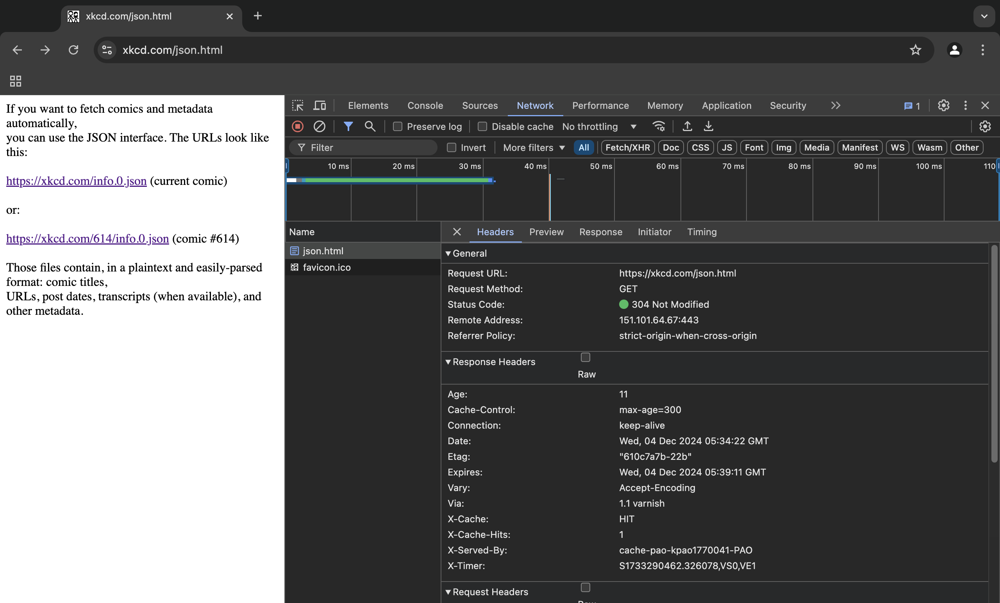

Lab 16: JSON and APIs
Challenge
The challenge of this lab is to experiment with processing JSON from an API.
Problems
Results
This is the endpoint, perhaps. I'm unsure! But it is the docs!
I also found this picture of stick figures holding hands in network under a "preview" tab so maybe that's an example of the data that will be returned from the API onto the published site? Idk.